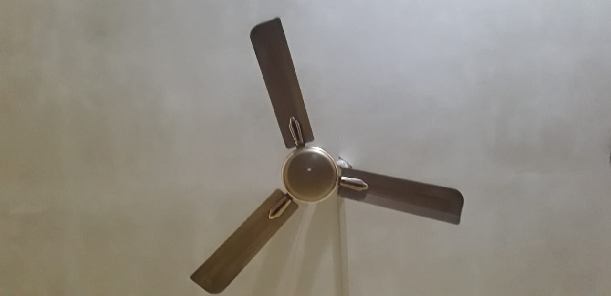
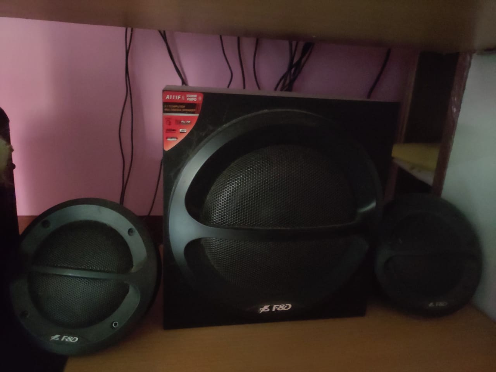

CASE STUDY BETWEEN GOOGLE LENS AND MOBILNET MODEL
CASE STUDY BETWEEN GOOGLE LENS AND MOBILNET MODEL
GOOGEL LENS 
VS
MOBILNET MODEL
1. Test Image -

Outputs -
Output on GOOGLE LENS - Doll
Output on MOBILNET MODEL - Teddy, Teddy bear
2. Test Image -

Outputs -
Output on GOOGLE LENS - Cup
Output on MOBILNET MODEL - Coffe Mug
3. Test Image -

Outputs -
Output on GOOGLE LENS - Bottle
Output on MOBILNET MODEL - Water Bottle
4. Test Image -
Outputs -
Output on GOOGLE LENS - Fan
Output on MOBILNET MODEL - Tripod
5. Test Image -
Outputs -
Output on GOOGLE LENS - Keyboard
Output on MOBILNET MODEL - Computer Keyboard,Keypad
6. Test Image -

Outputs -
Output on GOOGLE LENS - Mouse
Output on MOBILNET MODEL - Mouse, Computer Mouse
7. Test Image -
Outputs -
Output on GOOGLE LENS - Phone
Output on MOBILNET MODEL - Ipod
8. Test Image -

Outputs -
Output on GOOGLE LENS - Tata sky remote
Output on MOBILNET MODEL - Remote control, Remote
9. Test Image -
Outputs -
Output on GOOGLE LENS - Sound Speaker
Output on MOBILNET MODEL - Loudspeaker, Speaker, Speaker unit
10. Test Image -
Outputs -
Output on GOOGLE LENS - Wrist Watch
Output on MOBILNET MODEL - Cellular telephone, Cellular phone, Cellphone